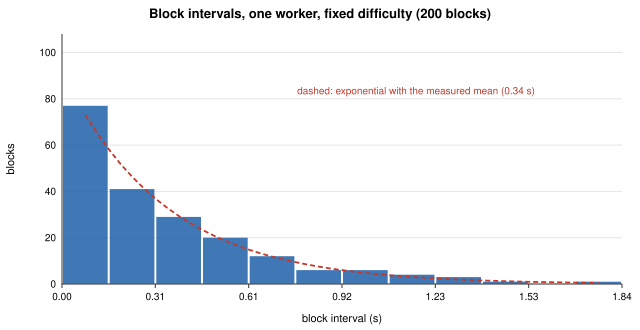
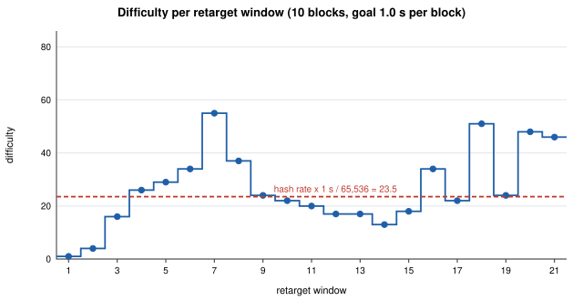
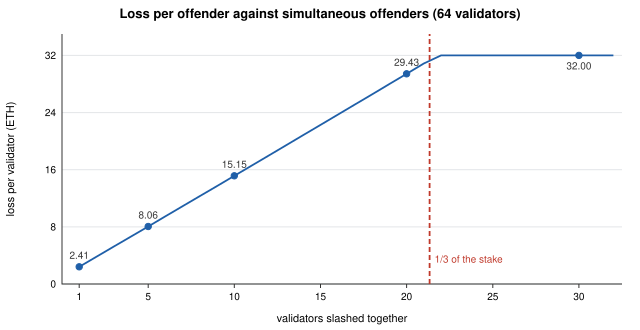
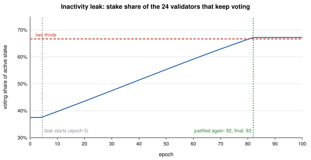
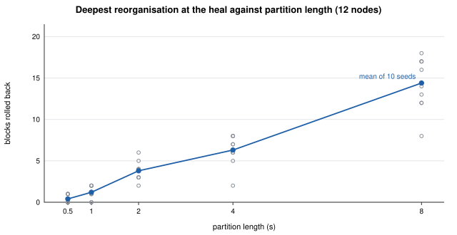
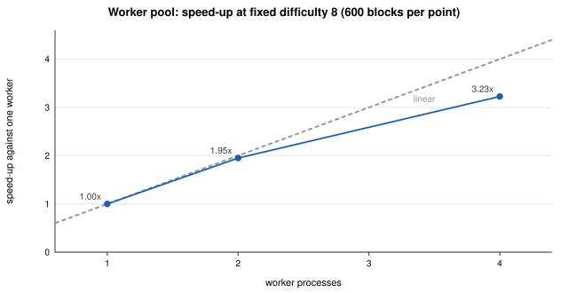
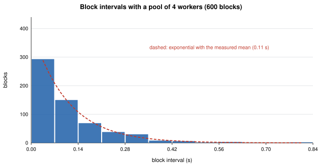

| Item | Value |
|---|---|
| Repository | https://github.com/KhusanAshuraliev/lab-03-consensus-simulation |
| Stack | Python 3.12 with uv. Standard library only (hashlib, struct, asyncio, multiprocessing, statistics, random). No blockchain, networking or consensus library. |
| Evidence | Demo and test output in evidence/; the raw numbers behind every figure in evidence/data/*.json |
| Reproduce | uv sync && uv run pytest && uv run python -m consensus; measurements with experiments/collect.py, figures with experiments/charts.py |
| Tests | 95 passed: the course suite of 42 tests, copied unchanged, plus 53 tests of my own. |
| Machine | Apple silicon Mac, 8 cores, macOS 15.3. One process computes about 1.5 million block hashes per second. |
I took all numbers below from runs of my own implementation. I kept the module and function names of the course suite so that it runs unchanged; the code is my own. Timing results change from run to run, so I report what I measured.
I mined 200 blocks with one worker process and recorded the time each block took. My hash loop is faster than the reference (I hash the constant part of the header once and reuse that state), so at difficulty 1 a block takes only about 0.04 s. I therefore fixed the difficulty at 8, which gives about 524,000 expected hashes and a third of a second per block, and I switched retargeting off for this run: intervals measured at several difficulties would be a mixture of distributions and not one.

| Statistic | Measured | Exponential prediction | Range in the lab sheet |
|---|---|---|---|
| mean interval | 0.3369 s | 524,288 / 1.54 M H/s = 0.340 s | |
| median interval | 0.2277 s | 0.2335 s | |
| standard deviation | 0.3233 s | 0.3369 s | |
| median / mean | 0.676 | ln 2 = 0.693 | 0.60–0.80 ✓ |
| stdev / mean | 0.960 | 1.0 | 0.80–1.20 ✓ |
| min / max interval | 0.0007 s / 1.84 s | more than a factor of ten ✓ |
The ratios are noisy for small samples. The demo run saved in evidence/demo_pow.txt has only 100 blocks and gave 0.565 and 1.039; with 100 samples the standard error of median / mean is about 0.07. The three 600-block runs of section 8 gave 0.634, 0.683 and 0.684.
The histogram is strongly skewed to the right. The first bin is the tallest, the counts fall off roughly geometrically, and there is no peak near the mean. The shortest and the longest block differ by a factor of about 2,600.
Every hash is an independent trial that succeeds with the same probability p = target / 2256. The number of trials until the first success is geometric, and with p this small it is exponential for all practical purposes: P(T > t) = e−t/μ. Half of the blocks arrive before t = μ·ln 2 ≈ 0.69 μ, so the median is 69 % of the mean. The mean is higher because a few very long intervals pull it up, while nothing can pull it down below zero. In my sample the longest interval is 5.5 times the mean.
The search is memoryless: P(T > s + t | T > s) = P(T > t). Having hashed for a second without success does not bring the miner any closer to a block; the next hash has exactly the same chance as the first one.
Because no attempt builds on an earlier one, a miner with a share h of the hash rate makes a share h of all attempts and so finds a share h of the blocks. The reward is proportional to the work, for small and large miners alike, and a miner loses nothing when somebody else finds a block and everybody starts on a new header.
Now suppose the puzzle had progress, for example a computation of fixed length where the first to finish wins. Then accumulated work would count. The fastest miner would finish first almost every time, so a miner with 30 % of the hash rate would win far more than 30 % of the blocks and a small miner would win almost none. Each new block would also throw away the partial progress of all the losers, which hurts the small ones most. Mining would stop being a lottery with tickets in proportion to hash rate and would become a race that the largest participant always wins, and the system would centralise.
My test suite contains a deterministic version of this measurement: with fixed timestamps the winning nonce is fixed, and over 150 blocks the number of attempts per block gives both ratios inside the ranges above.
For the difficulty plot I used the recipe of the lab sheet, simulate_mining(blocks=200, workers=1, target_seconds=1.0): a retarget every 10 blocks, with a goal of 10 s per window, starting at difficulty 1. This gives 20 windows.

| Window | 1 | 2 | 3 | 4 | 5 | 6 | 7 | 8 | 9 | 10 |
|---|---|---|---|---|---|---|---|---|---|---|
| difficulty | 1 | 4 | 16 | 26 | 29 | 34 | 55 | 37 | 24 | 22 |
| window time (s) | 0.23 | 1.34 | 5.97 | 8.75 | 8.53 | 6.07 | 14.53 | 15.10 | 10.86 | 10.76 |
| Window | 11 | 12 | 13 | 14 | 15 | 16 | 17 | 18 | 19 | 20 |
| difficulty | 20 | 17 | 17 | 13 | 18 | 34 | 22 | 51 | 24 | 48 |
| window time (s) | 11.19 | 9.75 | 12.83 | 7.09 | 5.27 | 15.29 | 4.30 | 20.51 | 4.99 | 10.39 |
The clamp is visible at the start. The first two windows were far too fast, and each raised the difficulty by exactly the allowed factor: 1 → 4 → 16. Only from the third window on is the adjustment smaller than four.
Then the difficulty oscillates and does not settle. The lab sheet expects a band of about 1 to 3 for the reference miner. My miner hashes about 1.5 million headers per second, so my equilibrium is higher: 1.54 M × 1 s / 65,536 ≈ 23.5. The difficulty moves around this value, between 13 and 55, rising after a fast window and falling after a slow one. It is not a monotone climb and it does not converge to a constant.
The reason is that a window does not measure the hash rate, it only estimates it from a few exponentially distributed intervals. The sum of N such intervals has a relative error of 1/√N. For my N = 10 that is about 32 %, and it matches what I see: at an unchanged hash rate the windows took between 4.3 s and 20.5 s. A lucky window (window 6, 6.07 s) pushes the difficulty well above the equilibrium (34 → 55), the next windows are then really too slow, and the loop corrects downwards again. The controller chases its own measurement noise.
Why Bitcoin uses two weeks. With one block per window the error would be about 100 %, and the difficulty would jump by large factors on pure chance. Bitcoin's 2,016 blocks give 1/√2016 ≈ 2.2 %, so an adjustment mostly reflects a real change of hash rate. A long window is also harder to manipulate: with a retarget every block, a miner could move the difficulty with a single false timestamp, while over 2,016 blocks one timestamp changes the measured time by a negligible amount. The price is slow reaction. After a real collapse of hash rate the chain must still finish the current window at the old difficulty, and the 4× clamp then limits how far a single adjustment can go.
For each k I created a fresh BeaconState(validator_count=64), let all 64 validators attest genesis → chain-A, let the first k also attest genesis → chain-B, and processed epoch 1 (pos.slashing_loss).
| Offenders | 1 | 5 | 10 | 20 | 21 | 22 | 30 |
|---|---|---|---|---|---|---|---|
| Loss per offender (ETH) | 2.41 | 8.06 | 15.15 | 29.43 | 30.87 | 32.00 | 32.00 |
| Lab sheet | 2.41 ✓ | 8.06 ✓ | 15.15 ✓ | 29.43 ✓ | 32 from about 22 ✓ | 32.00 ✓ |

The same scenarios in my demo give 32.0000 -> 29.5916 ETH (loss 2.4084) for a lone equivocator, 32.0000 -> 2.5680 ETH (loss 29.4320 each) for twenty, and slashed : True, rule : surround_vote for the surround vote.
The penalty has two parts. Every offender first loses 1/32 of its balance, which is 1 ETH. Then comes the correlated part:
The fraction grows in proportion to the number of offenders, so the curve is practically a straight line, about 1.4 ETH more per additional offender. It stops growing when 3 × slashed / total reaches 1, that is when one third of the stake is slashed together. With 64 validators this is 21.3 validators, so 21 offenders still keep a little (1.13 ETH) and from 22 on everybody loses the whole 32 ETH.
I think it is, because the penalty follows the danger and not only the act. A single validator that signs two blocks for the same epoch has almost always made an operational mistake, typically the same key running on two machines. It could not have harmed anyone: one validator out of 64 is far from the one third that Casper needs to be broken. It loses 2.4 ETH, which hurts and is a reason to fix the setup, but it survives.
The knee of the curve is at exactly the Byzantine threshold. Two conflicting checkpoints can both be finalised only if at least one third of the stake signs both. So when a third of the stake equivocates in the same period, the offence is no longer an accident that could not matter: it is precisely what is needed to break finality, and the protocol takes everything. Between these extremes the loss grows with the share of the stake involved, which means it grows with how close the network came to a real failure.
There are two things I find less fair. A validator cannot know at the moment of its mistake how many others fail at the same time. If many validators use the same client or the same hosting provider and one bug makes them all equivocate, they are punished like attackers although nobody intended an attack. I accept this, because the protocol cannot see intentions, and because it gives everybody a reason not to run the same setup as everyone else, which makes the network more robust. And a small staker loses the same fraction as a large one, but the large one can afford better operations.
I extended Scenario 5 to 100 epochs (pos.inactivity_leak_trace). 40 of 64 validators are offline from the start; the 24 that remain attest in every epoch, always linking from state.current_justified.
epoch 1: voting share= 37.5% leaked= 0.000 ETH justified=None finalized=None epoch 4: voting share= 37.5% leaked= 0.000 ETH justified=None finalized=None epoch 5: voting share= 37.9% leaked=20.000 ETH justified=None finalized=None epoch 11: voting share= 40.1% leaked=18.197 ETH justified=None finalized=None epoch 20: voting share= 43.6% leaked=15.792 ETH justified=None finalized=None epoch 40: voting share= 51.4% leaked=11.525 ETH justified=None finalized=None epoch 60: voting share= 59.2% leaked= 8.411 ETH justified=None finalized=None epoch 80: voting share= 66.5% leaked= 6.139 ETH justified=None finalized=None epoch 81: voting share= 66.9% leaked= 6.043 ETH justified=None finalized=None epoch 82: voting share= 67.2% leaked= 5.948 ETH justified=(82, root-82) finalized=None epoch 83: voting share= 67.2% leaked= 0.000 ETH justified=(83, root-83) finalized=(82, root-82) epoch 100: voting share= 67.2% leaked= 0.000 ETH justified=(100, root-100) finalized=(99, root-99) absent validator : 9.3686 ETH at the end present validator: 32.0000 ETH at the end

What the trace shows, against the lab sheet:
With 40 of 64 validators silent, the 24 that remain cannot know why. The others may have crashed, or they may be alive on the other side of a network partition and voting for a different chain. If the protocol allowed 37.5 % of the stake to finalise, then in the second case the other side could finalise as well, and there would be two final histories that contradict each other. Finality would mean nothing. A late finalisation costs time; a wrong one cannot be repaired, because exchanges and bridges have already acted on it. So Casper chooses safety: without more than two thirds it finalises nothing.
Stalling forever would be a failure too, and the leak is the way out. It slowly removes the stake of those who do not vote until the voters again hold more than two thirds of what is left. It is deliberately slow (in my model 78 leaking epochs; on Ethereum weeks), which gives a real partition time to heal and operators time to come back before a minority can finalise alone. The cost is paid by the absent validators, including honest ones that were only cut off.
I ran uv run python -m consensus gossip --nodes 12 with seeds 1, 7 and 42. Nodes 0–5 form side A and nodes 6–11 side B. Nodes 0, 3, 6 and 9 mine with equal hash power, so each side has two miners. The network as a whole finds a block every 0.25 s on average, the latency per hop is about 5 ms, and the split lasts 1.5 s.
seed 1
phase 1 (connected) distinct tips=1 heights=[4] converged=True
phase 2 (split) distinct tips=2 heights=[7, 8] blocks added: A=+4 B=+3
HEAL
just after heal distinct tips=1 heights=[12]
phase 3 (healed) distinct tips=1 heights=[16] converged=True
seed 7
phase 1 (connected) distinct tips=1 heights=[7] converged=True
phase 2 (split) distinct tips=2 heights=[8, 9] blocks added: A=+2 B=+1
HEAL
just after heal distinct tips=1 heights=[11]
phase 3 (healed) distinct tips=1 heights=[17] converged=True
seed 42
phase 1 (connected) distinct tips=1 heights=[6] converged=True
phase 2 (split) distinct tips=3 heights=[9, 10] blocks added: A=+4 B=+4
HEAL
just after heal distinct tips=1 heights=[12]
phase 3 (healed) distinct tips=1 heights=[20] converged=True
| Seed | Last common block | Side heights at the heal | Reorganisation depths, side A (each node) | Reorganisation depths, side B (each node) | End |
|---|---|---|---|---|---|
| 1 | height 4 | A 8, B 7 | none | [3] on all six nodes | one tip, height 16 |
| 7 | height 7 | A 9, B 8 | none | [1] on all six nodes | one tip, height 17 |
| 42 | height 6 | A 10, B 10 (equal work) | node0 [4]; nodes 1–5 [1, 4] | [1] on all six nodes | one tip, height 20 |
The complete lists (chain.reorg_depths of every node) are in evidence/data/gossip.json. Bold: the reorganisation at the heal. In every run 200 to 234 messages were dropped at the cut.
Seed 1 and seed 7. During the split both sides extended their own chain from the last common block. At the heal side B had less work, so every node of B switched to A's branch and rolled back its whole private branch: 3 blocks with seed 1, 1 block with seed 7. The depth equals the number of blocks the lighter side had mined since the fork. The nodes of A recorded nothing; they only stored B's blocks as a losing branch.
Seed 42 shows the two other effects. The depth-1 entries on eleven nodes come from an ordinary race in the connected phase: two miners found a block at almost the same time, and the next block decided. At the end of the split there were three tips, because one side was itself in such a race. And at the heal the two sides had equal work. Neither side moved, as the rule demands: the tip changes only on strictly more work. The tie was decided by the next block, which was found on B's branch, and then all nodes of A rolled back 4 blocks.
Transactions. In each run I submitted one transaction to each side during the split. In all three runs each of the six nodes of the losing side put that side's transaction back into its mempool when its blocks were rolled back (6 returns per run) and announced it again, and at the end both split-time transactions were confirmed in the common chain. Nothing was lost; the transactions of the losing side were confirmed twice, once in a block that was later discarded and once in the surviving chain.
While the network is split, each side extends its own chain at a rate proportional to its hash power, and the two branches cannot see each other. The branch of the side that loses is exactly what must be thrown away at the heal, and its expected length is (rate of that side) × (duration of the split). It grows linearly with time. A depth-1 reorganisation needs only two blocks within one propagation delay; a depth-10 reorganisation needs a side to work alone for ten of its block intervals.
I checked this with my simulator: 12 nodes, 10 seeds per duration, and for each run the deepest reorganisation at the heal.

| Partition length | 0.5 s | 1 s | 2 s | 4 s | 8 s |
|---|---|---|---|---|---|
| Mean depth of the heal reorganisation | 0.4 | 1.2 | 3.8 | 6.3 | 14.4 |
| Smallest / largest of 10 runs | 0 / 1 | 0 / 2 | 2 / 6 | 2 / 8 | 8 / 18 |
Each side mines 2 blocks per second, so after 8 s both branches are about 16 blocks long and the shorter one, which is lost, is 14.4 blocks long on average. For a user this means that the number of confirmations that makes a payment safe depends on how long a partition can stay unnoticed.
The CAP theorem says that during a network partition a system must give up either consistency or availability. The safety / liveness frame says the same from the side of the protocol: safety means that nothing bad happens (two nodes never accept conflicting histories), liveness means that something good eventually happens (transactions get confirmed). My three implementations stand on different sides.
Proof of work with gossip (Parts A and C) gives up consistency. When I split my network, both halves kept mining and kept accepting transactions. The price is that the two halves confirmed different blocks, and at the heal one half had to roll its blocks back: 3 blocks with seed 1, 1 with seed 7 and 4 with seed 42. Safety is therefore only probabilistic. A confirmed block can be reverted, with a probability that falls with every block on top of it but never reaches zero. The sacrifice happens under a partition, under ordinary propagation delay (the depth-1 races), and without any partition when an attacker holds more than half of the hash power. In production I would watch the stale-block rate, the number and depth of reorganisations, nodes or explorers reporting different tips at the same height, and transactions that return from a block to the mempool. A sudden drop of the block rate at unchanged difficulty is the sign that part of the hash power is mining where I cannot see it.
Casper FFG (Part B) gives up liveness of finality. A checkpoint needs links from more than two thirds of the stake. In my leak experiment 40 of 64 validators were offline and nothing was finalised for 82 epochs. The protocol stalled; it never finalised anything wrong. The condition is more than one third of the stake being offline or cut off. In production I would see the participation rate fall below two thirds, the distance between the current epoch and the last finalised epoch grow beyond the normal two, and the inactivity penalties begin.
Slashing and the leak give up the balances of honest validators. The leak restores liveness by draining whoever does not vote, and it cannot tell an attacker from an honest validator on the wrong side of a long partition. In my trace an absent validator fell from 32 to 9.37 ETH. If both sides of a partition leak for long enough, each can regain two thirds of its own remaining stake and finalise its own chain, so a very long partition finally costs safety as well. The observable sign is the balance of validators that are honest but isolated falling epoch after epoch, together with a shrinking total active stake.
The two designs can be combined, and Ethereum does it: its LMD-GHOST fork choice keeps producing blocks like my proof-of-work network (available), while FFG finality on top stops like my Part B (consistent).
Word count of this section: 474 (limit 500).
In consensus/doublespend.py I implemented the formula of section 11 of the Bitcoin whitepaper and a Monte Carlo simulation of the same race. An attacker with a share q of the hash rate lets the merchant wait for z confirmations and tries to overtake the honest chain with a private one.
The simulation follows the same model: per trial I draw the attacker's progress from the Poisson distribution with mean λ and then play the race block by block, where the attacker wins each block with probability q, until it has caught up or is 60 blocks further behind.
| q | z | Formula | Whitepaper | Monte Carlo | Monte Carlo / formula | Trials |
|---|---|---|---|---|---|---|
| 0.10 | 5 | 0.0009137 | 0.0009137 ✓ | 0.0009012 | 0.986 | 5,000,000 |
| 0.10 | 6 | 0.0002428 | 0.0002428 ✓ | 0.0002334 | 0.961 | 5,000,000 |
| 0.30 | 5 | 0.1773523 | 0.1773523 ✓ | 0.1766500 | 0.996 | 500,000 |
| q | 0.10 | 0.15 | 0.20 | 0.25 | 0.30 | 0.35 | 0.40 | 0.45 |
|---|---|---|---|---|---|---|---|---|
| z needed for P < 0.1 % | 5 | 8 | 11 | 15 | 24 | 41 | 89 | 340 |
The formula reproduces the three values of the whitepaper to all seven printed digits, and the table of confirmations needed for P < 0.1 % as well, including the three values named in the lab sheet (z = 5, 24 and 340). The Monte Carlo estimates agree with the formula within the 10 % the lab sheet asks for. For q = 0.1 the event is rare (about one success in 1,100 and in 4,100 trials), so I used 5 million trials there.
My parallel miner is a pool from the beginning (pow.MinerPool). The worker processes are started once. For every block each worker receives the header prefix and the target through its own queue and searches the nonces i, i + W, i + 2W, … A shared job number says which search is current. The workers read it every 1,024 hashes; when the main process has a result it sets the number to zero and all other workers stop within a millisecond. Before the first block the pool waits until every worker has reported that it is ready, so process start-up is never measured as mining time. mine_parallel is this pool used for a single block; all its processes have exited when it returns.
I mined 600 blocks at fixed difficulty 8 with a pool of 1, 2 and 4 workers.
| Workers | Mean block time | Relative to one worker | Speed-up | median / mean | stdev / mean |
|---|---|---|---|---|---|
| 1 | 0.3417 s | 1 | 1.00× | 0.634 | 1.067 |
| 2 | 0.1751 s | 0.51 | 1.95× | 0.683 | 1.053 |
| 4 | 0.1059 s | 0.31 | 3.23× | 0.684 | 1.037 |
| Expected | 1 : ½ : ¼ | 0.60–0.80 | 0.80–1.20 |


The distribution stays exponential. With four workers median / mean is 0.684 and stdev / mean is 1.037, both inside the ranges of Part A, and the histogram has the same shape as Figure 1. This is the result the reference miner cannot give with several workers, because there every interval contains the start of new processes. In my pool the intervals contain only hashing.
The scaling is 1 : 0.51 : 0.31. Two workers halve the block time as the theory says. Four workers give 3.23× and not 4×. To find the reason I measured the machine without my miner (experiments/hashrate.py): I let 1, 2 and 4 processes do nothing but hash at the same time. One process alone reaches 1.50 million hashes per second, but when four run together each reaches only 1.08 to 1.24 million, so the four together deliver 2.9 to 3.3 times the hash rate of one (two runs). The speed-up of my miner, 3.23×, is therefore the speed-up of the hardware. The processor is an Apple M1 with four performance and four efficiency cores, and it does not keep the single-core speed when four cores are loaded; the main process and the operating system also need processor time. The pool itself adds almost nothing: the search is memoryless, so the workers never repeat or wait for each other, and the only overhead per block is one queue message per worker and at most 1,024 hashes (0.7 ms) until a loser notices that the job has changed.
A first run with 200 blocks per point at difficulty 16 gave 1 : 0.41 : 0.24, which looked better than linear. With 200 exponential intervals the mean has a relative error of about 7 %, so I repeated the measurement with 600 blocks per point and report that one.
| # | Requirement | Evidence that it is done |
|---|---|---|
| 1 | Ledger and fork choice | A skipped nonce, a repeated nonce and an amount above the balance are rejected with a reason. The tip moves only on strictly more work. After a reorganisation the old branch is still stored, the reported depth equals the blocks rolled back, and the old branch can win the tip back. |
| 2 | Proof of work | Every mined block has a header hash below its target and is accepted with check_pow=True. retarget gives 2000 / 500 / 4000 / 250 and never less than 1. Four strided searches together find the same first nonce as the plain search. After mine_parallel no child process is left. |
| 3 | Interval statistics | Section 1: 0.676 and 0.960 over 200 single-worker blocks. |
| 4 | Casper FFG | With 9 validators 6 votes do not justify and 7 do. Scenario 1 justifies (1, root-1) in epoch 1, finalises it in epoch 2 and finalises (2, root-2) in epoch 3. A supermajority link from an unjustified source changes nothing. A link from epoch 1 to epoch 3 justifies but does not finalise. |
| 5 | Slashing | Section 3. Double votes and surround votes are both detected, the surround vote in either order of arrival. Three conflicting votes of one validator slash it once. |
| 6 | Inactivity leak | Section 4. |
| 7 | Gossip network | Section 5. In my tests every node counts a transaction and a block exactly once, however many peers relay them; nothing crosses a partition, including a message already in flight; after the heal all nodes agree on the heavier tip, and the transaction of the orphaned block is pending again on every node and is then confirmed on the surviving chain. |
$ uv run pytest tests/test_consensus.py .......................................... [100%] 42 passed $ uv run pytest ........................................................................ [ 75%] ....................... [100%] 95 passed